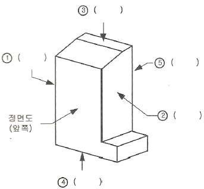
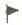
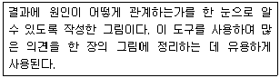
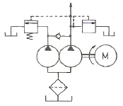
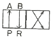

설비보전기능사 (2007-09-16 기출문제)
1과목: 기계보전 일반(대략구분)
1. 펌프 운전시 압력계의 압력이 낮게 나타나는 원인이 아닌 것은?
- 임펠러의 막힘
- 흡입측의 막힘
- 안전밸브의 불량
- 공회전
(정답률: 59%)

2. 전동기 기동불능의 원인이 아닌 것은?
- 배선의 단선
- 전기기기의 고장
- 기계적 과부하
- 베어링 마모
(정답률: 78%)
3. KS의 부문별 분류 기호 중 기계 분야 분류기호로 맞는 것은?
- KS A
- KS B
- KS C
- KS D
(정답률: 82%)
4. 부러진 볼트를 빼는데 사용되는 공구는?
- 토크 렌치
- 짐 크로
- 임팩트 렌치
- 스크류 엑스트랙터
(정답률: 76%)
5. 냉각에 의하여 경화 되는 접착제는?
- 열용융형 접착제
- 모노마형 접착제
- 용액형 접착제
- 유화액형 접착제
(정답률: 65%)
6. 송풍기 축의 온도상승에 의한 신장에 대한 대책은?
- 전동기측 베어링이 신장되도록 한다.
- 반전동기측 방향으로 신장되도록 한다.
- 양쪽이 모두 신장되도록 한다.
- 신장되지 못하도록 제한한다.
(정답률: 58%)
7. 그림을 보고 순서대로 투상도의 명칭을 올바르게 작성한 것은?

- ①좌측면도-②우측면도-③평면도-④저면도-⑤배면도
- ①우측면도-②좌측면도-③평면도-④저면도-⑤배면도
- ①좌측면도-②우측면도-③저면도-④평면도-⑤배면도
- ①우측면도-②좌측면도-③저면도-④평면도-⑤배면도
(정답률: 88%)
8. 코일 스프링의 도시 방법으로 옳은 것은?
- 코일 스프링을 도시 할 때에는 원칙으로 무하중인 상태에서 그린다.
- 그림 안에 기입하기 힘든 사항은 일괄하여 표제란에 기입한다.
- 코일 스프링의 양 끝을 제외한 같은 모양 부분을 일부 생략하는 경우에는 생략 된 부분을 한 개의 굵은 실선으로 나타낸다.
- 코일 스프링의 종류 및 모양만을 간략하게 도시하는 경우에는 스프링의 중심선을 가는 1점 쇄선 또는 가는 2점 쇄선으로 표시한다.
(정답률: 66%)
9. 원심식 압축기에 대한 설명 중 가장 거리가 먼 것은?
- 고압발생이 가능하다.
- 윤활이 쉽다.
- 압력맥동이 없다.
- 대용량이다.
(정답률: 73%)
10. 내장된 전자 코일에 의해 발생된 전자력으로 회전력을 전달하는 클러치는?
- 밴드 클러치
- 맞물림 클러치
- 마찰 클러치
- 전자력 클러치
(정답률: 89%)
11. 설비보전 조직에 있어서 집중보전의 장점은?
- 긴급작업, 고장, 새로운 작업을 신속히 처리한다.
- 생산라인의 공정변경이 신속히 이루어진다.
- 보전요원이 용이하게 제조부의 작업자에게 접근할 수 있다.
- 근무시간의 교대가 유기적이다.
(정답률: 76%)
12. 다음 이의 면 열화 현상 중 표면피로에 해당하는 현상은?
- 피이닝 항복
- 초기 피칭
- 스코어링
- 절손
(정답률: 61%)
13. 윤활유가 수분과 혼합하여 유화액을 만들어 윤활유가 열화되는 현상은?
- 산화
- 탄화
- 유화
- 희석
(정답률: 56%)
14. 기어가 회전할 때 맞물리는 이 표면에는 접촉압력에 의해 최대 전단응력이 발생하여 균열이 일어나고, 그 균열 속으로 윤활유가 들어가면 고압인 상태가 되어 균열을 진행시켜 이의 일부분이 떨어져 나가게 된다. 이러한 현상을 무엇이라 하는가?
- 언더컷
- 오버랩
- 피칭
- 스폴링
(정답률: 71%)
15. 다음 중 회전도시 단면도를 그리는 방법으로 틀린 것은?
- 절단한 단면적이 클 경우는 적절하게 줄여 그린다.
- 절단할 곳의 전후를 끊어서 그 사이에 그린다.
- 절단선의 연장선 위에 그린다.
- 도형 내의 절단한 곳에 겹쳐서 가는 실선으로 그린다.
(정답률: 46%)
16. 길이가 긴 축의 구부러짐을 현장에서 수리하는 공구는?
- 스크루 익스트랙터
- 다이얼 게이지
- 스트레이트 에지
- 짐 크로
(정답률: 82%)
17. 고장 분석의 필용성이 아닌 것은?
- 신뢰성의 향상
- 보전성의 향상
- 경제성의 향상
- 기술력의 향상
(정답률: 49%)
18. 용접기호의 표시법 중 보조기호 "

"에 대한 것으로 맞는 것은?- 전체 필렛 용접
- 전체 둘레 용접
- 연속 필렛 용접
- 현장 용접
(정답률: 84%)
19. 관 이음쇠의 기능이 아닌 것은?
- 관로의 연장
- 관로의 분기
- 관의 상호운동
- 관의 진동 방지
(정답률: 54%)
20. 다음 중 길이측정에서 비교측정기에 속하지 않는 것은?
- 다이얼 게이지
- 버니어 캘리퍼스
- 미니 미터
- 옵티 미터
(정답률: 75%)
2과목: 설비관리(대략구분)
21. 다음 중 기어 감속기의 분류에서 평행축형 감속기에 속하지 않는 것은?
- 웜 기어
- 스퍼 기어
- 헬리컬 기어
- 더블 헬리컬 기어
(정답률: 77%)
22. 액상 윤활유가 갖추어야 할 성질이 아닌 것은?
- 충분한 점도를 가질 것
- 청정하고 불 균질할 것
- 화학적으로 불활성일 것
- 산화나 열에 대한 안정성이 높을 것
(정답률: 73%)
23. 순환펌프를 이용하는 윤활제의 급유방법은?
- 핸드 급유법
- 오일링 급유법
- 강제 순환 급유법
- 담금 급유법
(정답률: 77%)
24. 밸브 본체 내에서 디스크가 90도 회전하여 개폐하는 형식의 대표적인 밸브이고 특히 밸브구경 대비 밸브 노즐면간의 길이가 매우 짧고 콤팩트화 된 밸브는?
- 글로브밸브
- 버트플라이밸브
- 체크밸브
- 게이트밸브
(정답률: 56%)
25. 어떤 설비에 대한 시간가동률을 산출하려고 한다. 지난 1주간의 설비가동 현황은 다음과 같다. 지난 1주간의 시간 가동률은 몇 %인가? (단, 조업시간 = 500분, 고장시간 = 30분, 계획된 휴지시간 = 60분)
- 93.2%
- 90.5%
- 88.0%
- 82.0%
(정답률: 64%)
26. 다음 중 보전용 자재의 관리상 특징이 아닌 것은?
- 연간 사용빈도가 낮으며 소비속도가 늦은 것이 많다.
- 자재구입의 품목, 시기의 계획을 수립하기가 좋다.
- 보전의 기술수준 및 관리수준이 보전자재의 재고량을 좌우하게 된다.
- 불용자재의 발생 가능성이 크다.
(정답률: 29%)
27. 설비보전 조직을 위한 고려사항이 아닌 것은?
- 제품의 특성
- 생산형태
- 설비의 특징
- 납기
(정답률: 73%)
28. 설비의 목적별 분류에서 직접 생산 행위를 하는 기계 및 운반장치, 전기장치, 배관，계기, 배선, 조명, 냉‧난방 등의 제 설비와 그 설비에 직접 관계하는 건물 등을 무엇이라 하는가?
- 생산 설비
- 유용 설비
- 수송 설비
- 관리 설비
(정답률: 53%)
29. 품질개선 활동에서 QC 7 도구는 매우 유용하게 사용된다. 다음은 QC 7 도구 중 어떤 특정한 도구를 설명한 것인가?

- 파레토그림
- 히스토그램
- 특성요인도
- 프로세스 매핑
(정답률: 56%)
30. 횡측에 시간，종축에 부하전력을 설정, 표시한 도표를 무엇이라 하는가?
- 부하곡선
- 조정전력곡선
- 수요물곡선
- 설비이용율곡선
(정답률: 76%)
3과목: 공유압 일반(대략구분)
31. 고장이나 불량의 발생형태에는 돌발형과 만성형이 있다. 다음 중 만성형 로스에 대한 설명이 올바르지 못한 것은?
- 만성형 로스 발생 원인은 하나이지만 원인이 될 수 있는 것은 수 없이 많다.
- 만성형 로스는 원인을 명확히 파악하기 어렵기 때문에 혁신적인 대책이 필요하다.
- 만성형 로스는 지그가 마모되어 정밀도가 유지되고 있지 않기 때문에 불량이 발생한다.
- 만성형 로스는 복합원인 의해 발생하며, 또 그 요인의 조합이 그 때마다 달라진다.
(정답률: 65%)
32. 보전비를 들여서 설비를 최적 상태로 유지함으로서 막을 수 있었던 생산상의 손실을 무엇이라 하는가?
- 생산손실
- 기회손실
- 시간손실
- 설비손실
(정답률: 56%)
33. 공장의 열관리의 영역을 열에너지 흐름에 따라 분류할 경우 해당되지 않는 것은?
- 연료의 관리
- 연소의 관리
- 열 발생설비의 다양화
- 폐열의 회수 이용
(정답률: 40%)
34. 치공구를 정의한 내용으로 틀린 것은?
- 치구부착구는 가공 성형 시에 적합하게 가공하여 표준화 된 제품을 얻는 것이다.
- 공구는 소재를 가공해서 희망하는 형상으로 만드는 공작작업에 사용하는 도구이다.
- 검사구는 재료 등을 작업이 규정하는 기준에 합치되는지 조사하기 위한 공구이다.
- 금형은 재료를 가공, 성형해서 제품을 얻는 것으로 주로 금속재료를 사용해서 만든다.
(정답률: 54%)
35. 다음 공장설비 중 부대시설이 아닌 것은?
- 안전설비
- 급수설비
- 배수설비
- 난방설비
(정답률: 61%)
36. 자주보전을 효율적으로 달성하기 위한 자주보전 전개스텝이 있다. 추진방법의 절차가 올바른 것은?
- 총점검 - 초기청소 - 발생원 곤란개소대책 - 점검급유기준작성 - 자주점검
- 총점검 - 초기청소 - 점검급유기준작성 - 발생원 곤란개소대책 - 자주점검
- 초기청소 - 발생원 곤란개소대책 - 점검급유기준작성 - 총 점검 - 자주점검
- 초기청소 - 점검급유기준작성 - 발생원 곤란개소대책 -자주점검 - 총 점검
(정답률: 67%)
37. 수리공사에 대한 설명 중 틀린 것은?
- 돌발수리공사 : 설비검사에 의해서 계획하지 못했던 고장의 수리
- 사후수리공사 : 설비검사를 하지 않은 생산 설비의 수리
- 예방수리공사 : 설비검사에 의해서 계획적으로 하는 수리
- 정기수리공사 : 조업상의 요구에 의해서 하는 수리
(정답률: 51%)
38. 설비관리의 의의에 대한 설명 중 거리가 가장 먼 것은?
- 보전도 유지를 포함한 생산보전 활동
- 설계와 연계되는 보전도 향상
- 설비 자산의 효율성 관리
- 설비에 대한 요구변화 관리
(정답률: 61%)
39. 다음은 TPM(total productive maintenance)의 추진방법을 설명한 것이다. 틀린 것은?
- 평소의 청소, 점검 등을 통하여 정상적인 상태를 유지한다.
- 작업자 계층의 소집단 활동을 집중 강화한다.
- 작업자가 감각이나 진단기기를 사용하여 이상을 빨리 발견토록 한다.
- 조기에 대처토록 한다.
(정답률: 66%)
40. 회전속도가 높고 전체 효율이 가장 좋은 펌프는 어느 것인가?
- 피스톤식
- 베인펌프식
- 내접기어식
- 외접기어식
(정답률: 58%)
41. 유압 장치의 이음 중에서 동 배관 등에 적합하며, 분해 및 조립시 용이한 배관 방식은?
- 플레어 이음
- 슬리브 이음
- 나사 이음
- 용접 이음
(정답률: 54%)
42. 공기압의 장점으로 옳은 것은?
- 정밀한 속도 조절이 가능하다.
- 배기시 소음이 크다.
- 에너지원의 오염이 심하다.
- 압축공기의 에너지를 얻기 쉽다.
(정답률: 69%)
43. 유압 장치의 속도 제어를 위해 설치된 밸브는?
- 체크 밸브
- 유량 제어 밸브
- 한계 밸브
- 서보 밸브
(정답률: 79%)
44. 공유압 회로에 사용되는 기호요소 중 파선이 나타내는 용도가 아닌 것은?
- 밸브의 과도위치
- 드레인 관로
- 포위선
- 필터
(정답률: 43%)
45. 압축 공기의 흡수식 건조 방식은?
- 물리적인 방식
- 화학적인 방식
- 기계적인 방식
- 자연건조 방식
(정답률: 60%)
46. 다음 그림은 어떤 유압제어 회로인가?

- 시퀀스 회로
- 카운터 밸런스 회로
- 언로드 회로
- 감속회로
(정답률: 46%)
47. 다음 연결 사항 중 틀린 것은?
- 실린더 : 움직이는 오일을 이용 기계적 일을 한다.
- 체크밸브 : 오일이 양 방향으로 흐르게 한다.
- 제어밸브 : 오일을 정지 또는 흐르게 하는 기능을 한다.
- 릴리프밸브 : 장치내의 압력이 과도하게 높아지는 것을 방지한다.
(정답률: 74%)
48. 유압 실린더에서 얻을 수 있는 힘은 F=A×P로 나타낸다. A와 P는 무엇인가?
- A : 유량, P : 속도
- A : 단면적, P : 압력
- A : 펌프의 종류, P : 펌프의 크기
- A : 단면적, P : 파이프 길이
(정답률: 74%)
49. 일반적으로 널리 사용되는 압축기로 사용 압력범위는 10kgf/cm2 ~ 100kgf/cm2 정도 까지 이며, 냉각 방식에 따라 공냉식과 수냉식으로 분류되는 압축기는?
- 왕복 피스톤 압축기
- 베인형 압축기
- 스크루형 압축기
- 터보 압축기
(정답률: 53%)
50. 다음의 기호에 해당되는 밸브가 사용되는 경우는?

- 실린더 유량의 제어
- 실린더 방향의 제어
- 실린더 압력의 제어
- 실린더 힘의 제어
(정답률: 61%)
4과목: 산업안전(대략구분)
51. 다음 중 공기압 실린더의 구성요소가 아닌 것은?
- 피스톤
- 커버
- 스풀
- 타이 로드
(정답률: 49%)
52. 액추에이터의 속도를 조정하는 밸브는?
- 유량조정밸브
- 압력조정밸브
- 언로드밸브
- 릴리프밸브
(정답률: 64%)
53. 유압유의 필요 조건이 아닌 것은?
- 동력을 유효하게 전달하기 위해 압축되기 힘들고 고온 고압에서 용이하게 유동될 것
- 적당한 윤활성을 가지고 섭동부의 시일 역할을 하고 내마모성 일 것
- 물, 공기, 먼지와 잘 융화되어 회로내에 침전물이 없을 것
- 인화점이 높고 온도 변화에 대해 점도 변화가 적을 것
(정답률: 47%)
54. 다음 중 기인물의 설명 중 맞지 않은 것은?
- 재해를 발생시킨 기계장치를 말한다.
- 기인물은 동력기계, 운반기계, 기타 장치로 분류한다.
- 인적 요인의 불안전한 행동을 말한다.
- 재해를 일으킨 근원이 되는 물체를 말한다.
(정답률: 57%)
55. 가설 구조물이 갖추어야 할 3가지 요소가 아닌 것은?
- 경제성
- 안정성
- 외관성
- 사용성
(정답률: 76%)
56. 수공구를 사용할 때 지켜야 할 사항이 아닌것은?
- 공구의 사용전에 이상유무를 반드시 점검한다.
- 수공구를 사용하기 전에 사용법을 익히고 사용한다.
- 준비된 공구가 없을 때에는 아무거나 대용품으로 사용한다.
- 공구 취급시 무리한 힘을 가하지 않는다.
(정답률: 85%)
57. 안전장갑을 착용한 후 하는 작업은?
- 밀링작업
- 용접작업
- 선반
- 연삭작업
(정답률: 83%)
58. 교류 아크 용접기의 방호장치는?
- 급정지 장치
- 자동 전격 방지기
- 비상 정지 장치
- 리미트 스위치
(정답률: 60%)
59. 회전중인 숫돌의 위험 방지를 위한 적절한 안전장치는?
- 급정지 장치를 한다.
- 집진 장치를 한다.
- 기동스위치에 시정장치를 한다.
- 복개장치를 한다.
(정답률: 54%)
60. 폭발을 일으키는 에너지유형으로 볼 수 없는 것은?
- 물리적 에너지
- 화학적 에너지
- 금속 에너지
- 원자 에너지
(정답률: 68%)